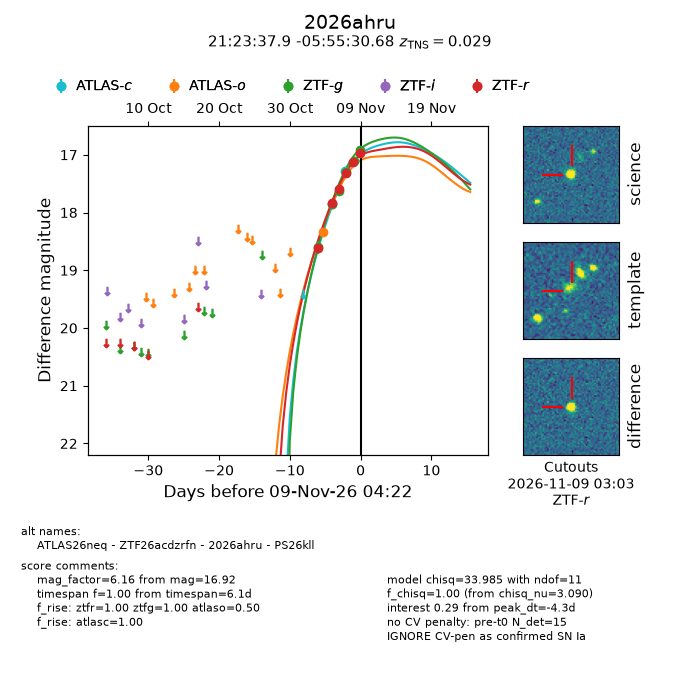
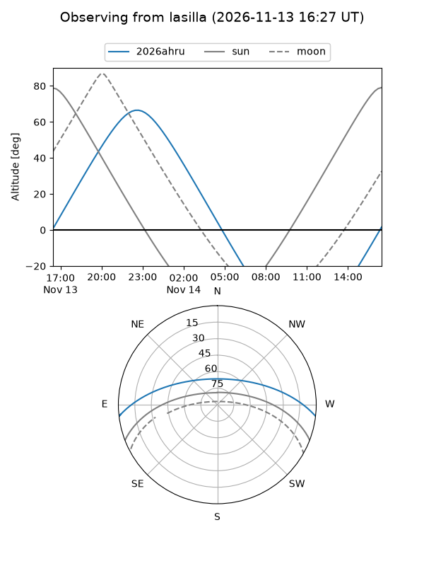
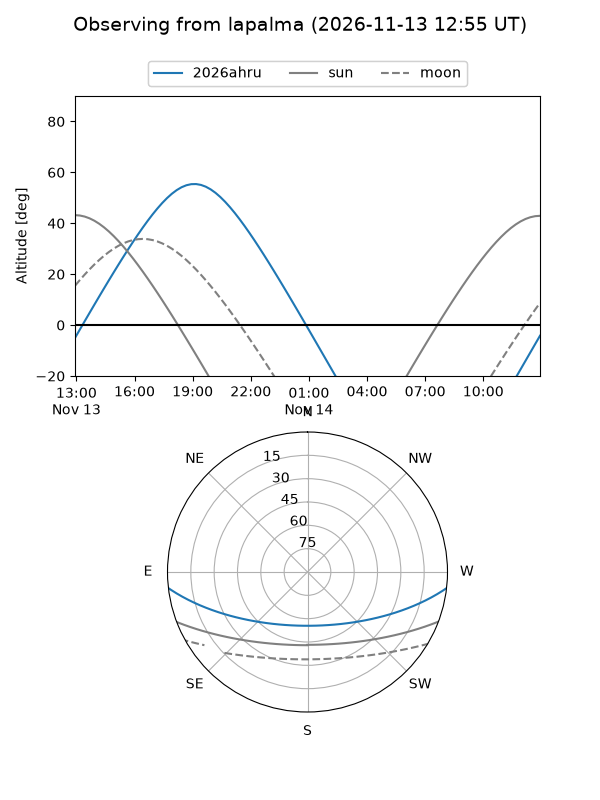
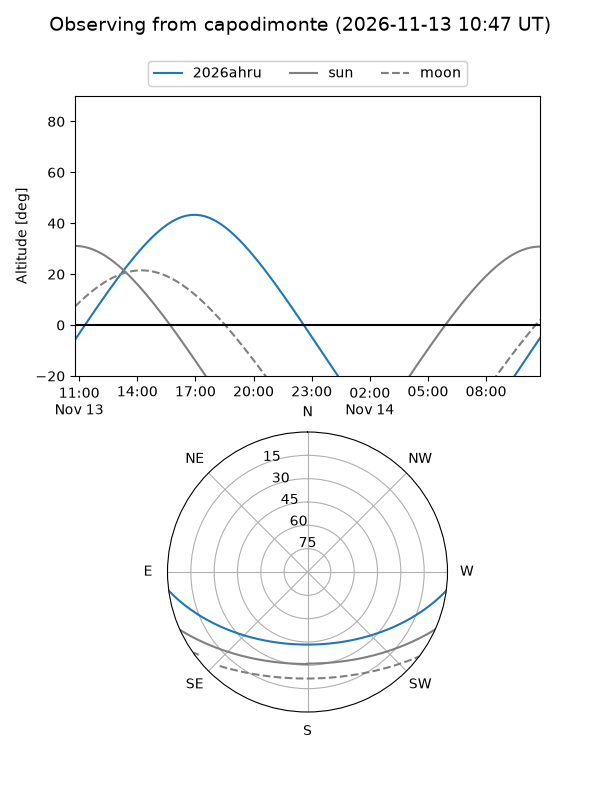
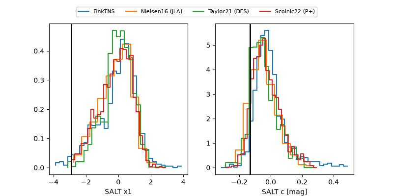

2026ahru
Target 2026ahru at 2026-11-09 04:24
Aliases and brokers:
FINK-ZTF: ztf.fink-portal.org/ZTF26acdzrfn
Lasair-ZTF: lasair-ztf.lsst.ac.uk/objects/ZTF26acdzrfn
ALeRCE-ZTF: alerce.online/object/ZTF26acdzrfn
YSE-PZ: ziggy.ucolick.org/yse/transient_detail/2026ahru
TNS name: wis-tns.org/object/2026ahru
Direct TNS query: direct search
alt names
ZTF26acdzrfn (ztf,fink_ztf)
2026ahru (tns,yse)
PS26kll (panstarrs)
ATLAS26neq (atlas)
Coordinates:
equatorial (ra, dec) = 320.9079,-5.92519
equatorial (HMS+DMS) = 21:23:37.90,-05:55:30.68
galactic (l, b) = (46.4050,-36.34633)
Flags:
TNS type: SN Ia
TNS redshift: 0.0290
peak dt: -4.3
Photometry:
last atlasc=17.29, atlaso=18.33, ztfg=16.92, ztfr=16.98
2 atlasc, 1 atlaso, 6 ztfg, 6 ztfr detections
Lightcurve

Visibility



Additional plots
